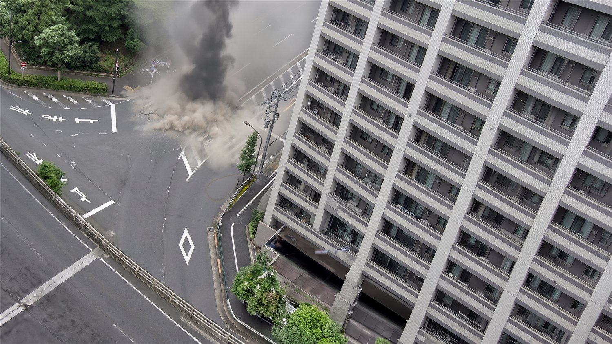
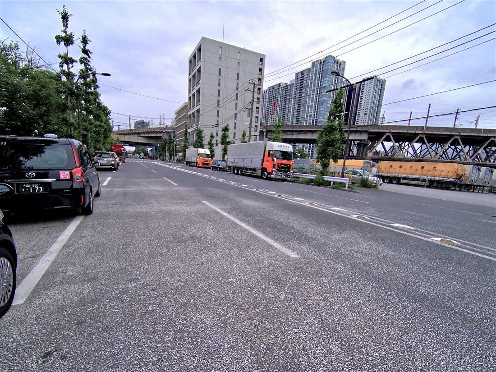
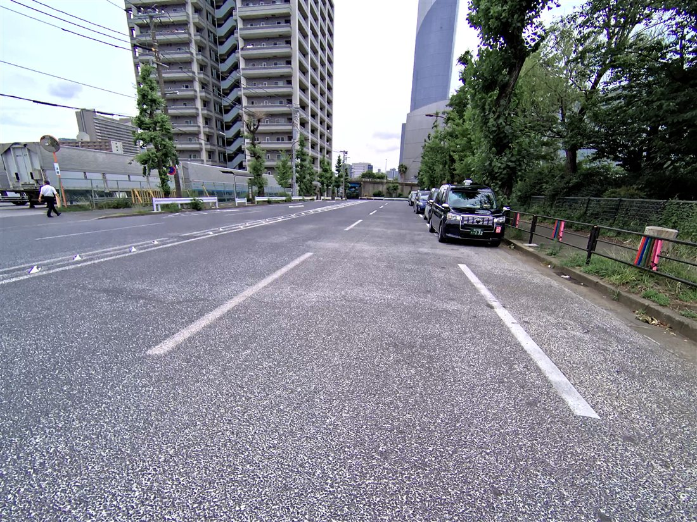
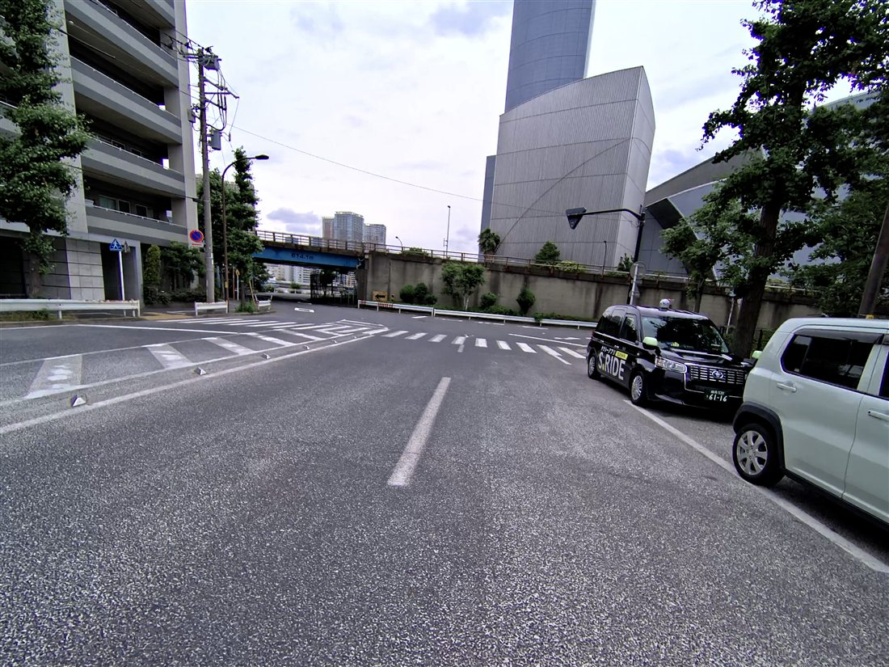
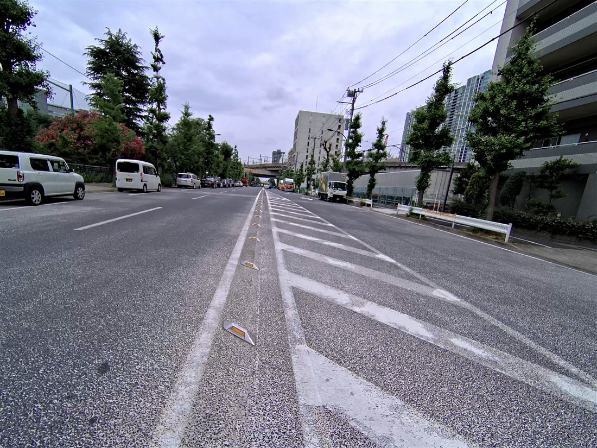
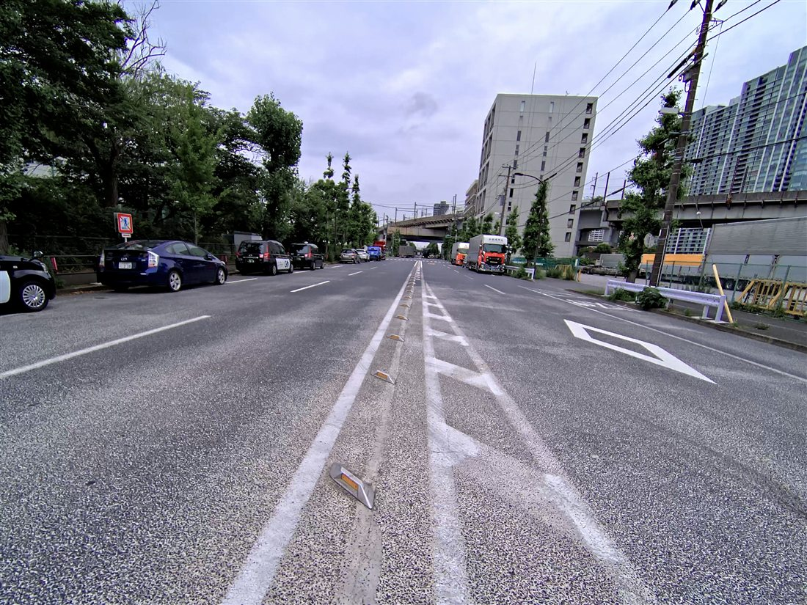
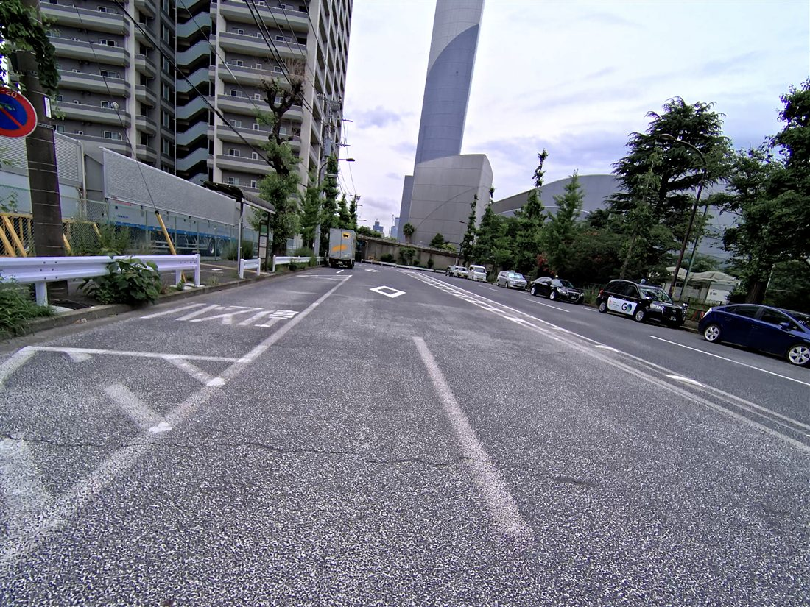
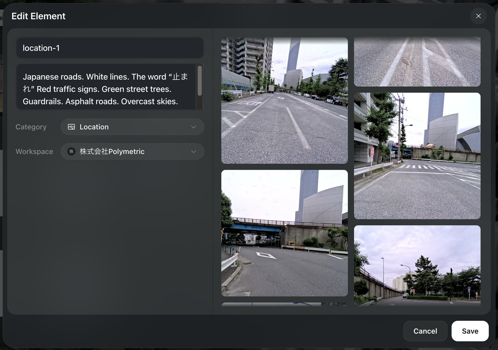
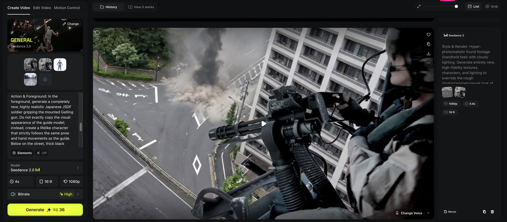

01 なぜ「3DGS × AI動画」なのか
AI動画生成（Seedance / Higgsfield 等）は品質が急上昇していますが、実制作で使うと必ずぶつかる壁があります。狙ったカメラワーク・構図・人物の動きにならないこと。プロンプトだけでは「だいたい」しかコントロールできません。
そこで効くのが 3D Gaussian Splatting（3DGS） です。現場をスキャンした3DGS空間を使えば、カメラの軌道・画角・人物のポーズを3D上で正確に作り込み、それを「ガイド（設計図）」としてAI動画に渡すことができます。AIは0から想像するのではなく、ガイドをなぞって"画作り"だけを担当する——これが破綻の少ないカットを生む鍵です。
02 用意するもの
- 空間スキャン / 3DGS
- XGRIDS PortalCam（徒歩スキャン）／ Lixel CyberColor（LCC Studio）で3DGS化
- 3D・カメラ・レンダ
- Cinema 4D ／ Octane Render ／ トラッキング元素材
- 背景の修正・加筆
- Nano Banana（AIでの破綻修正）／ Photoshop（煙などの加筆）
- AI動画生成
- Higgsfield（element管理）／ Seedance 2（ショット生成）
- 仕上げ
- After Effects（最終コンプ）
STEP 1 トラッキング元素材を用意する
まず、カメラの動きの"土台"になる素材を用意します。今回は素材サイトのフッテージを使用。後工程でこの映像のカメラの動きをトラッキング（解析）し、3D空間に同じカメラワークを再現します。
STEP 2 C4Dでカメラトラッキング
Cinema4Dで元素材をトラッキングし、解析した動きを3Dカメラに適用します。これで、3DGS空間の中を「元素材と同じカメラワーク」で動けるようになります。AI動画に渡すカメラの設計図がここで決まります。
STEP 3 3DGS＋色分けダミーをOctaneでレンダ（ガイド生成）
3DGS空間に、ポーズ・動きを付けたダミーの人物モデルを配置し、C4D / Octane でレンダリングします。ここがこのワークフロー最大の工夫で、ダミーモデルを部位ごとに色分けしているのがポイントです。
こうすると、後段のAIが「どこが頭・腕・胴か」を認識しやすくなり、生成時に人物の動き（ポーズ）を正確になぞらせることができます。つまりこのレンダ動画が、カメラワーク＋人物モーションのガイドになります。
STEP 4 背景の破綻をNano Bananaで修正＋加筆
歩行スキャンの3DGSは、遠景の建物・画面端・細部などが崩れやすい弱点があります。これを Nano Banana（AI）で破綻修正し、さらに Photoshop で煙などの要素を加筆して、背景プレートを整えます。

STEP 5 PortalCamデータから参照素材を抽出
次のelement作成（STEP 6）のために、ロケーションのリファレンス画像を用意します。これは PortalCam の撮影データ（内部の連番フレーム）から取り出した実写です。現場の路面標示・縁石・建物・空の質感を、そのままAIに学習させる素材になります。






STEP 6 Higgsfieldでelementを作成
Higgsfield の element 機能で、再利用できる「ロケーション」や「キャラクター」を登録します。STEP 5 の参照素材をアップロードし、テキストでロケーションの特徴も補足します（例：「日本の道路・白線・"止まれ"・赤い標識・街路樹・ガードレール・曇り空」）。
一度 element 化しておけば、同じ現場を何カットでも呼び出せる——スキャン資産がそのままAI制作のアセットライブラリになります。

location を登録。キャラクターも同様に element 化して組み合わせる。STEP 7 Seedance 2 でショット生成
いよいよ生成です。Seedance 2（Higgsfield 上）で、STEP 3 のOctaneガイド動画をなぞるように、ショットを生成します。渡すのは次の3つ：
- ガイド動画（色分けダミー入りの3DGSレンダ）＝カメラワークと人物の動き
- 整えた背景プレート / 補間画像（STEP 4）＝破綻のない背景の見た目
- element（STEP 6）＝ロケーションとキャラクターの質感
プロンプトでは「ガイドの見た目をそのままコピーせず、ポーズと手の動きだけを厳密に踏襲して、フォトリアルな人物を新規生成する」ように指示します。これにより、ダミーの質感に引っ張られず、動きの正確さだけを受け継げます。
Action & Foreground:
In the foreground, generate a completely new, highly realistic
Japanese JSDF soldier gripping the mounted Gatling gun.
Do NOT copy the visual appearance of the guide model — instead
create a fresh, photoreal result that strictly follows the same
pose and hand movements as the guide.
Below on the street, thick black smoke ...
@location @character
STEP 8 AEで仕上げ
生成されたショットを After Effects に持ち込み、カラー・グレード、合成、煙やエフェクトの調整を加えて最終コンプにまとめます。冒頭の完成動画がその結果です。
03 まとめ
AI動画の弱点は「コントロールできないこと」。それを 3DGS＋色分けダミーの"ガイド" と PortalCam由来の参照素材 で補うことで、狙ったカメラワーク・構図・ポーズのまま、フォトリアルなカットを生成できます。
現場を一度3DGSで持ち帰れば、それはAI動画の破綻しない設計図になり、同じ空間から何カットでも作れるアセットになります。「撮れない画」「飛ばせない場所」を、現場データから後付けで作る——これがロケハン3Dの 3DGS × AI ワークフローの核心です。